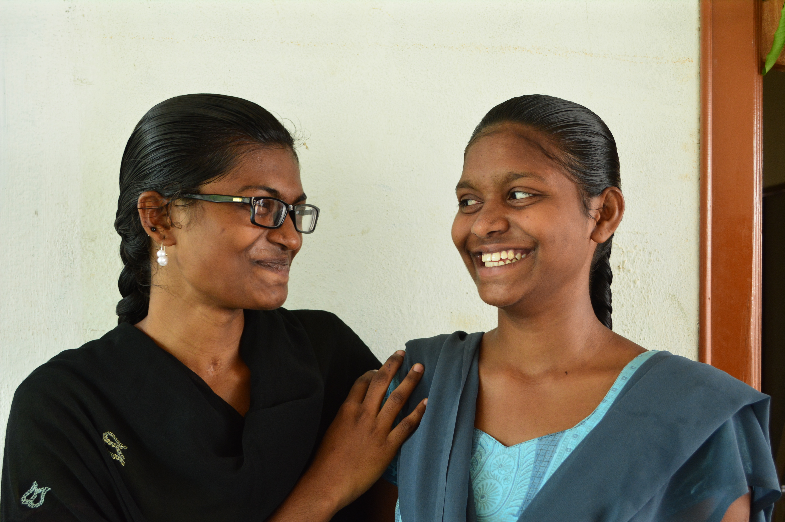

Kumari and Shubha arrived at Aarti Home together as young girls, inseparable from the start. Born into poverty and left without reliable parental care, they faced a future of early marriage and missed schooling — until Aarti gave them something neither had dared to hope for: time to grow.
At Aarti they studied together, encouraged each other through exams, and discovered their individual strengths. Kumari showed a talent for numbers and went on to study commerce; Shubha found her calling in education and trained to become a teacher.
Today they both hold stable careers and remain close, returning to Aarti every year to mentor younger girls.
“We always had each other. But Aarti gave us the tools to truly become who we were meant to be.”
Kumari and Shubha's story is a testament to the power of keeping siblings together — and of giving girls the space to discover themselves.
The sisters are now both pursuing further qualifications and remain passionate advocates for girls' education in their communities.